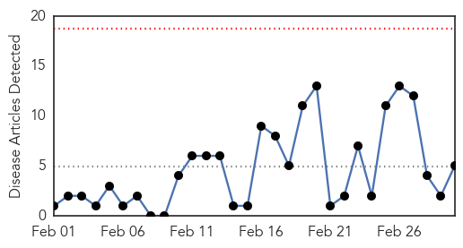
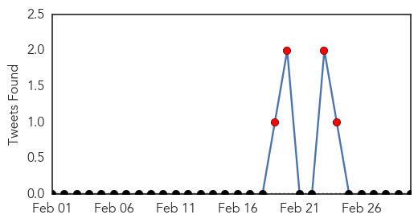
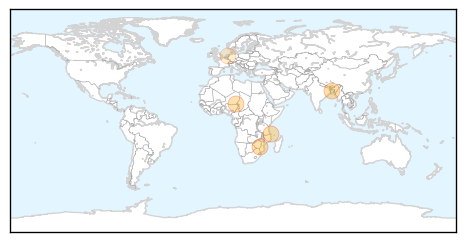
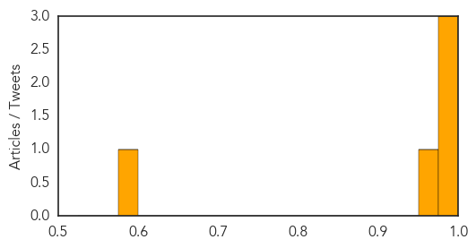
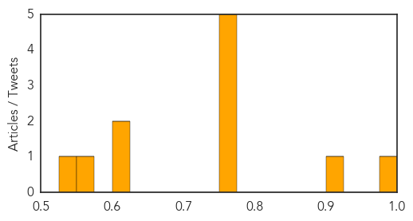

Cholera
30-Day Web Trend
0 alerts, 0 warnings

30-Day Twitter Trend
5 alerts, 0 warnings

Article Locations
Article Confidences
Top Articles:
- 0.995
- Cholera confirmed in Chiredzi - Zimbabwe
- 0.990
- Coliform contamination and cholera
- 0.977
- Feature: Cholera rumors cause violence in northern Mozambique
- 0.950
- UN: Niger cholera outbreak kills 51
- 0.587
- African Bulletin > Home > March 2015 Edition > COLUMNISTS > Drinking water and sanitation: International World Water Day and the MDG’s By Jacqueline Lampe
Top Tweets:
- 0.653
- cholera death toll now over 40 in mozambique http://t.co/zC8ljhRnRx via. Will vaccine be used to control the outbreak?
Influenza
30-Day Web Trend
0 alerts, 0 warnings
30-Day Twitter Trend
0 alerts, 0 warnings

Article Locations

Article Confidences
Top Articles:
- 0.995
- Flu vaccine ineffective for the 2014-15 flu season.
- 0.913
- Vaccines from a reactor
- 0.751
- March 1, 2015 Archives
- 0.751
- March 1, 2015 Archives
- 0.751
- March 1, 2015 Archives
- 0.751
- March 1, 2015 Archives
- 0.751
- March 1, 2015 Archives
- 0.610
- Deadly bacteria release sparks concern at Louisiana lab
- 0.606
- Groups dispute cause of avian flu
- 0.556
- Letter: Wrong-headed opinions on vaccines harm kids
- 0.530
- Deadly bacterium that is potential bio-terror agent escapes from US research lab
Top Tweets:
-
No tweets found for Mar 02, 2015